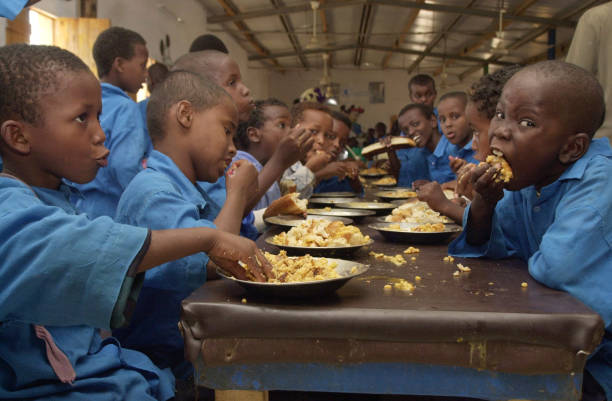
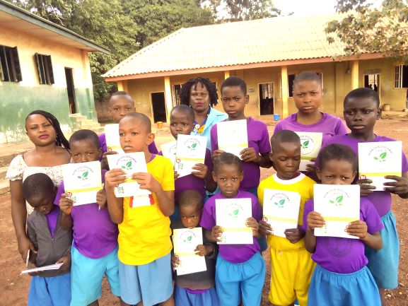
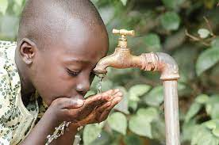
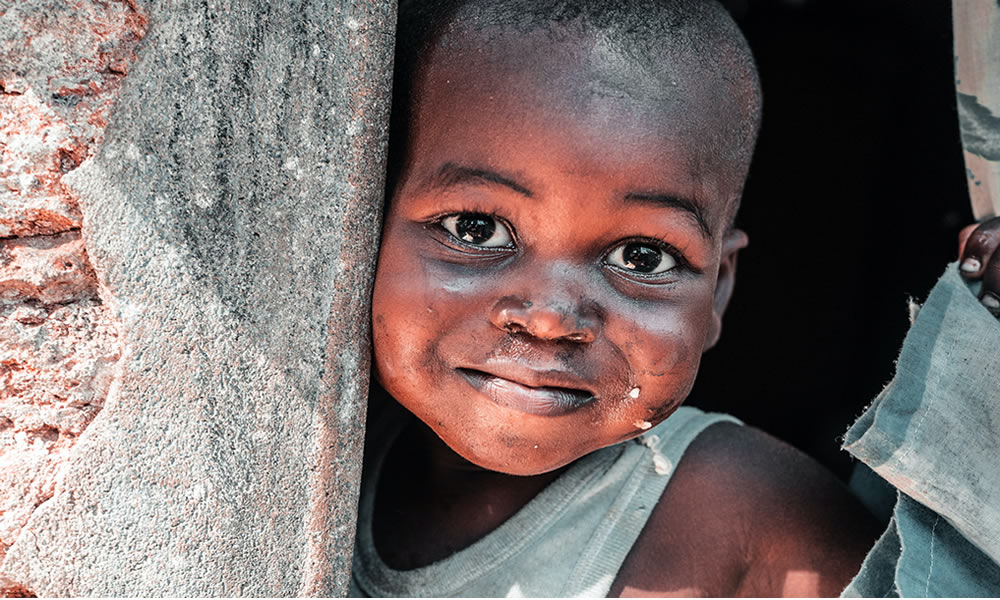
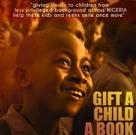

Food
Mlnutrician has been a major challenge to the proper development and growth of these children. We endeavor to provide them with nutritious food
Education
We are doing our best to give this orphaned children access to education. We also have children from poor homes we fund their school fees. A popular proverb in Africa goes: it takes a village to raise a child. What this translates to in simple terms is that it takes the contribution of an entire village, community or nation, if you will, to raise a child. Our parents from two, three, maybe four generations ago experienced this form of nurture that fed from the combined effort of elders who handled instruction in the way of custom and tradition. What this system ensured was that every child met with knowledge within and without the walls of their home.
Clean-Water
Lack of access to clean water has been one of the greatest challenges affecting the health and wellbeing of these children. We provide clesn water Water is life, necessary for the survival of all living organisms on earth. However, about 60 million people in Nigeria lack access to clean water, resulting in devastating consequences for their health and general wellbeing.
Join Us Now
Are you interested in giving these children a part of your time towards creating a better world for them, You can gift them with memorable experiences and affection if you spend some time with them.
 